© Crown Copyright, 2017
Ocean forecast verification
Building a software system
Andy Ryan
About me
- Met Office
- Ocean Forecast Verification team
- Member of GODAE OceanView IV-TT
- Contributor to CMEMS European project
- Scientific Software Engineer
GODAE OceanView
Global Ocean inter-comparison project
Ocean Verification Framework called "Class 4"
Part 1: Problem domain
Class 4 framework
- Same observations for all models
- Observations grouped into 24hr window
- Forecasts valid at noon on same day
- Forecasts mapped to observation space
- Spatial interpolation
- No temporal interpolation
- Further information
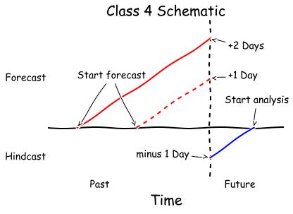
Ocean observations
- In-situ
- Sea surface temperature
- Temperature & salinity profiles
- Currents derived from floats
- Marine mammals
- Acoustic doppler current profilers
- HF radar
- Gliders
- Satellite
- Sea surface temperature
- Altimetry
- Sea ice concentration
- Chlorophyll
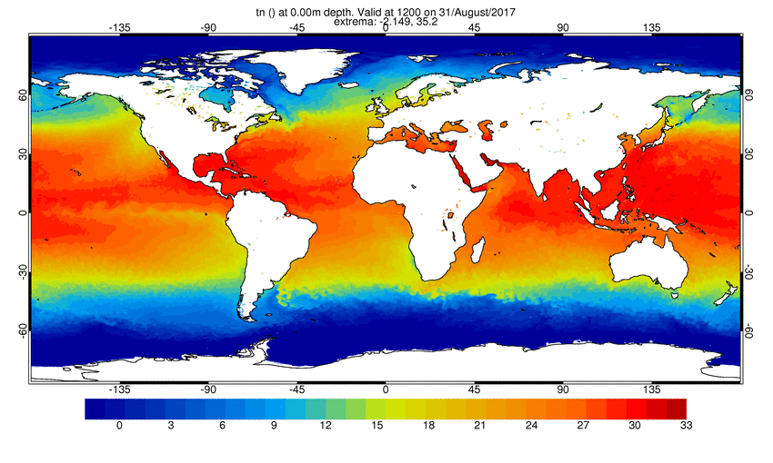
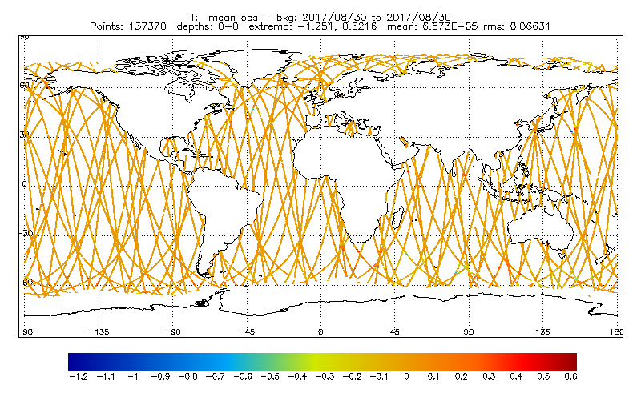
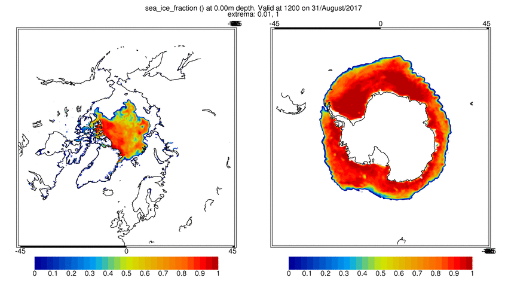
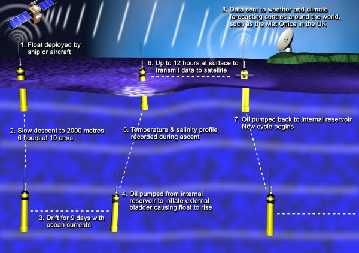
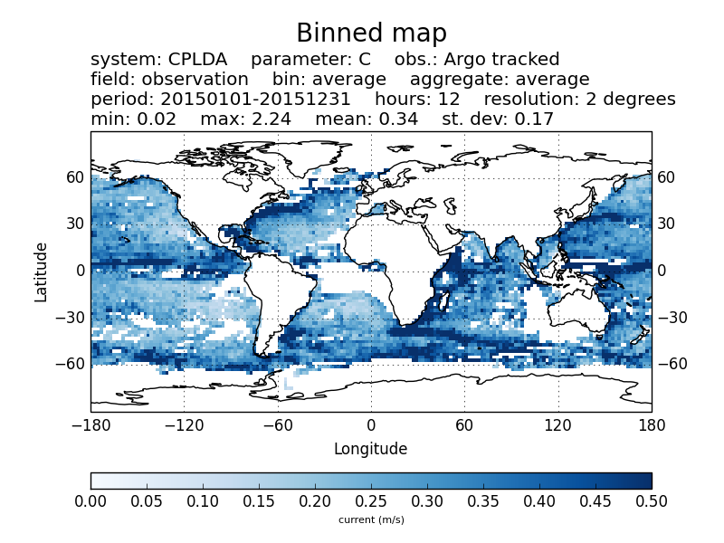
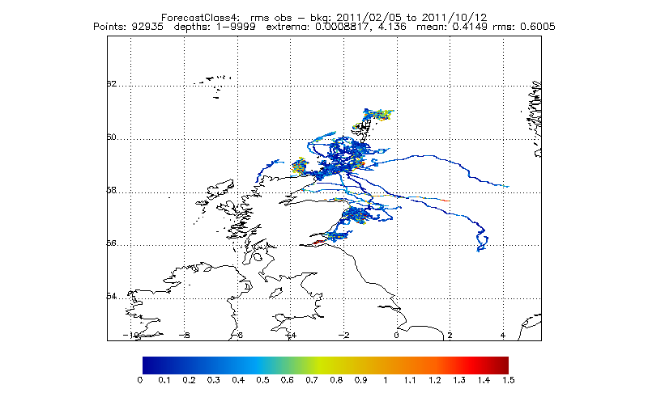
Ocean models
- Modelling infrastructure
- Tri-polar global models
- Eddy resolving regional models
- Shelf Seas models
- Coupled Ocean-Atmosphere models
- Biogeochemistry models
- Diagnostics
- Temperature
- Salinity
- Currents
- Sea surface height
- Vertical coordinates
- Fixed depth
- Terrain following
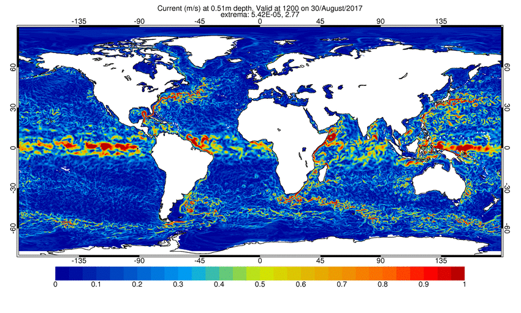
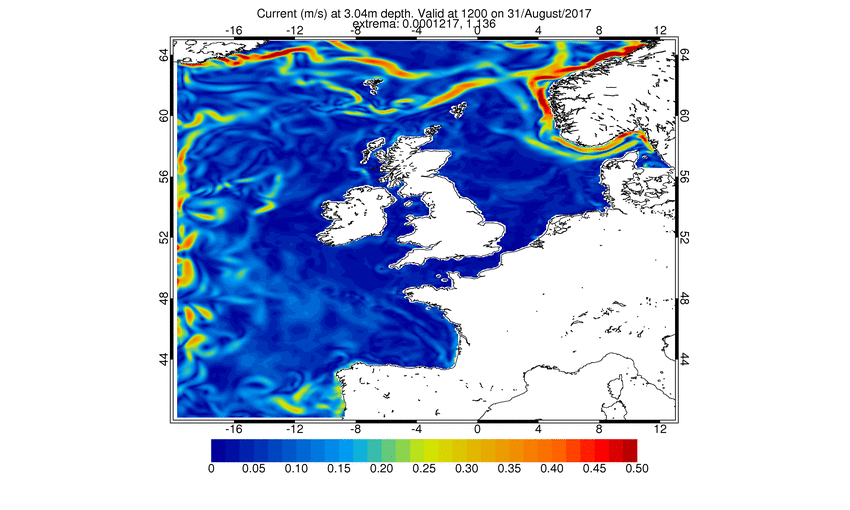
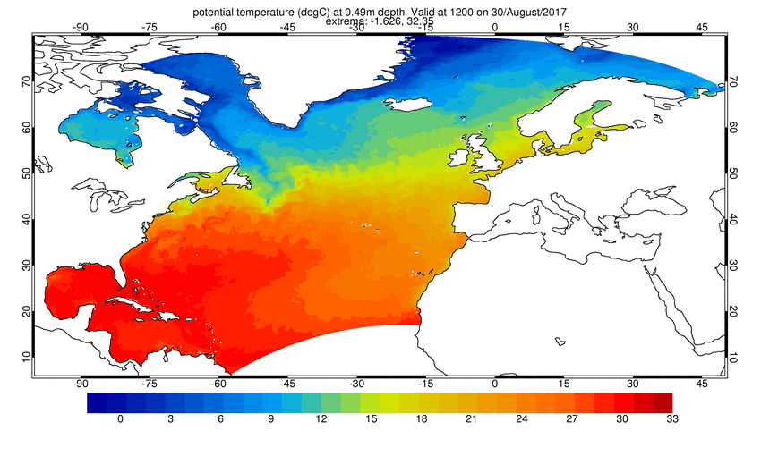
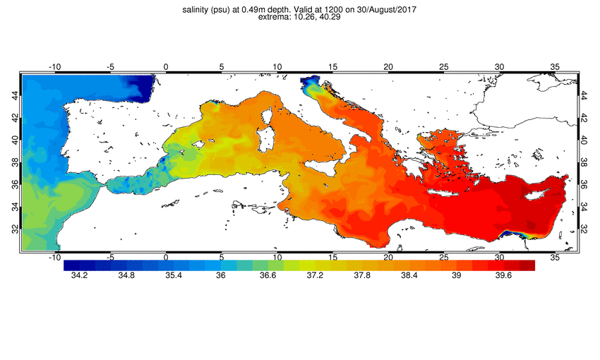
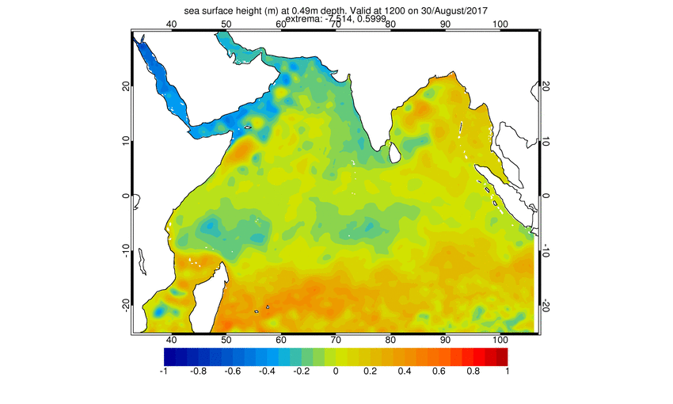
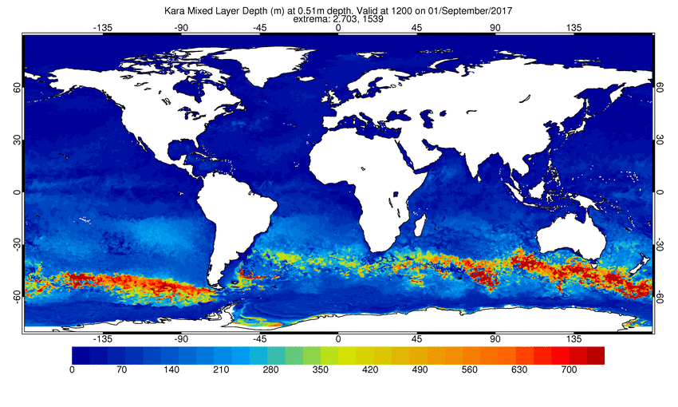
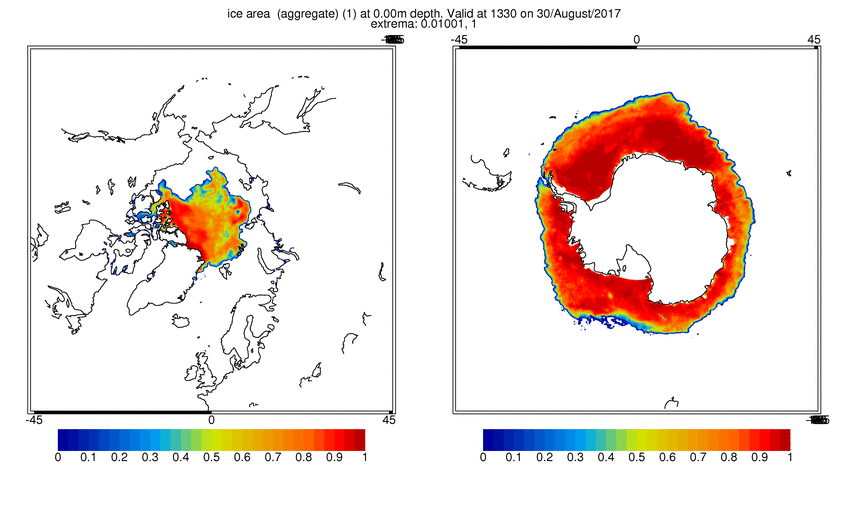
Verification metrics
- Match ups
- Observation: $\vec{o} = F_o(\lambda, \phi)$
- Forecast: $\vec{f} = F_f(\lambda, \phi)$
- Summary measures
- RMSE: $\sum{(f_i - o_i)^2} / N$
- MAE: $\sum{\mid f_i - o_i \mid} / N$
- Bias: $\sum{(f_i - o_i)} / N$
- Pearson correlation: $\frac{covar(\vec{f}, \vec{o})}{\sqrt{var(\vec{f}) var(\vec{o})}}$
[insert software here]
Visualisations, publications, websites
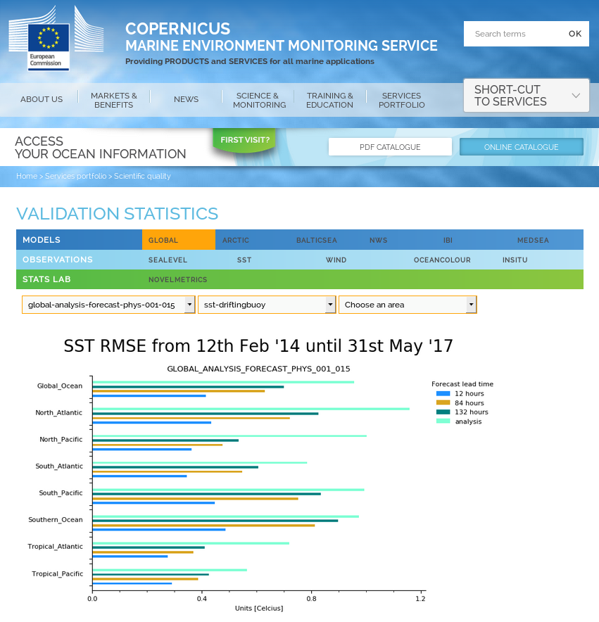 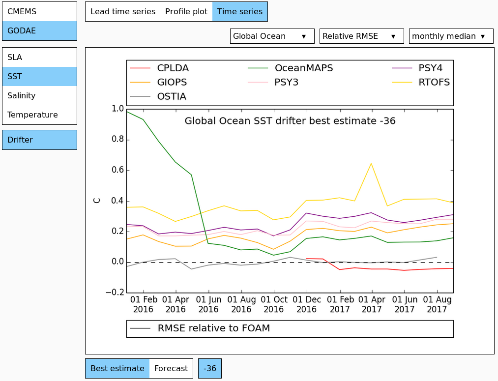 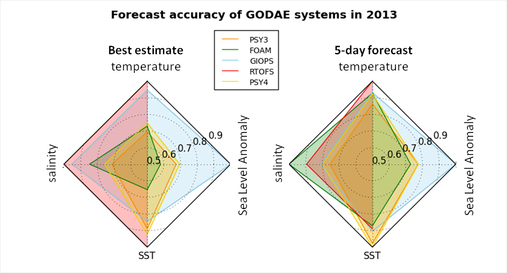 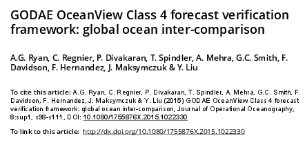 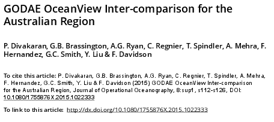 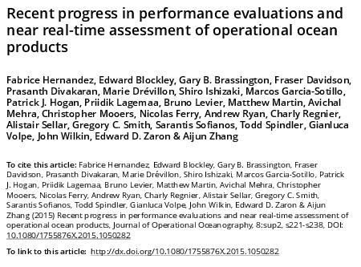Part 2: Solution domain
Requirements
- Share data with collaborators
- Interpolate forecasts to observation space
- Support all model grids
- Support all ocean observations
- Compute verification metrics
- Visualise metrics
- Maintain archive
- Tie it all together in one system
Collaboration protocol
- File formats defined
- Forecast/observation pairs
- Summary statistics
- Files exchanged via a server
- Enable consistent comparison of data
- Tools build on top of standard formats
Architecture
Requirements broken down into applications
> c4obs # Processes observations
> c4extract # Extracts Met Office forecasts
> c4interp # Interpolates forecasts
> c4stats # Computes summary statistics
> c4plot # Visualises statistics
> c4deliver # Sends files to collaborators
Each application has a single responsibility and a problem specific interface
Development practices
To guarantee system integrity, resilience and backwards compatibility
- Version control
- Test driven development
- Refactoring
- Code review
- Semantic versioning
Unit tests
- Class 4 system spread over several packages
- Approx. 2,000 unit tests covering main packages
[17:12]: nosetests c4data
.................................................................
-----------------------------------------------------------------
Ran 724 tests in 2.418s
[17:12]: nosetests c4tools
.................................................................
-----------------------------------------------------------------
Ran 870 tests in 4.357s
[17:12]: nosetests obsoper
.................................................................
-----------------------------------------------------------------
Ran 376 tests in 0.167s
Code reviews
- Review styles
- Light weight using trac
- Over the shoulder
- Formal review meetings
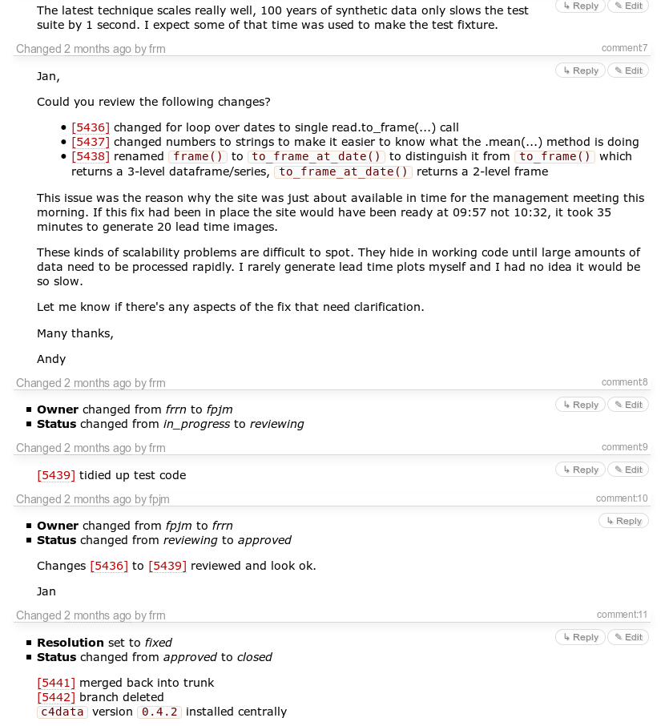
User feedback
- Users have ideas for features
- Discussions take place with developers
- The ticket system logs the ideas
- Tickets often assigned to users for review/testing
Case study: Command line bloat
Visualisation
Basic command line interface
c4plot stats*.ncCustom colors, line styles, markers
c4plot --colors red,green,blue --markers='.,x' --linestyles=':,-' stats*.ncAll bells and whistles
c4plot --title-y 0.9 --ylims 0,1 --metrics RMSE,Bias --regions='Indian Ocean' --colors red,green,blue --markers='.,x' --linestyles=':,-' stats*.ncConfig files
Put options into a JSON structure
c4plot --config-file=file.json stats*.nc
{
"default": {
"colors": ["Red", "Blue"],
"ylims": [0, 0.5]
},
"runs": [
{
"metrics": ["RMSE"]
},
{
"metrics": ["Bias"],
"ylims": [-0.1, 0.1]
}
]
}
Final step
Glue applications together into a suite
 Rose suite scheduler
Rose suite scheduler
- Task scheduler at the Met Office
- Deploys tasks across compute servers
- Declares dependencies between tasks
- Cycles and clock-triggers tasks
- Logs stdout and stderr
- Fits quite nicely with Class 4 architecture

Summary
- Ocean verification is performed routinely
- Output informs decision makers
- The system is scalable across machines
- Users suggest new features
- Developers follow good practices
- Clean scalable code follows